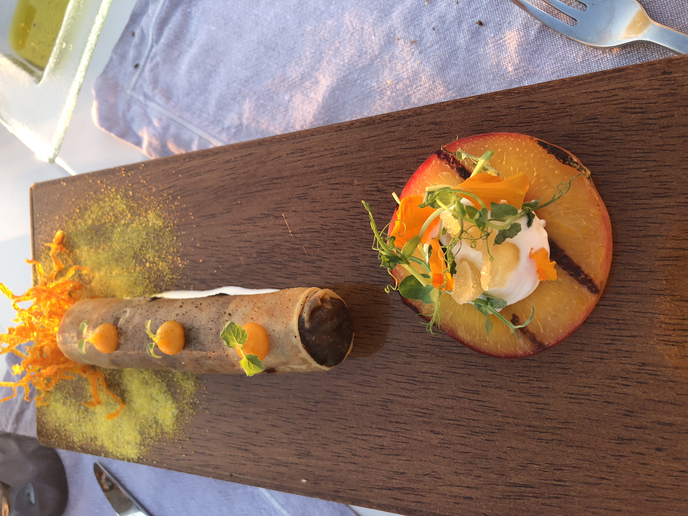
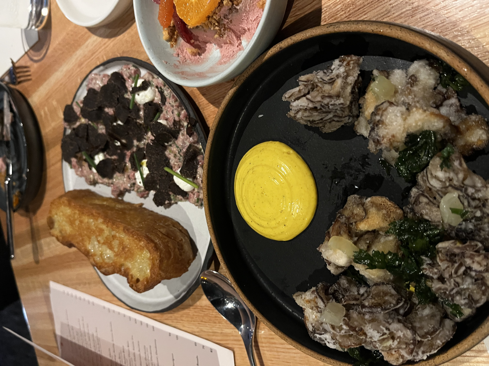
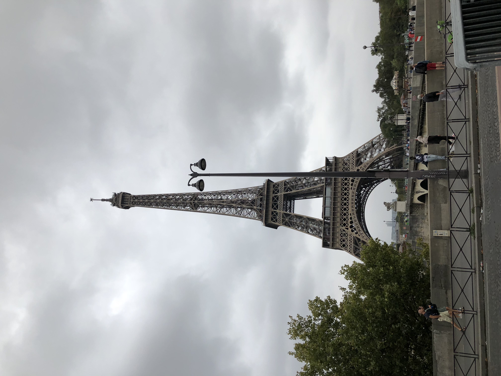
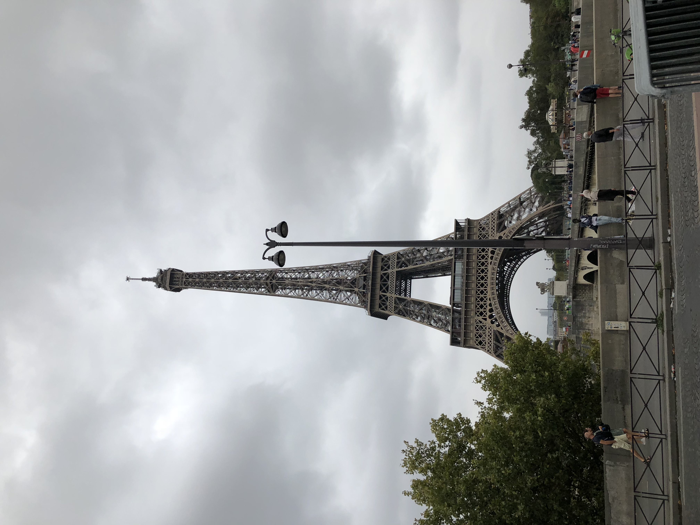

SHENEKA SHARREAYE'
I currently live in the Peach state, however I am originally from Los Angeles, California. My professional background
is solely in Hospitality Management, working for large and small hotel chains that include:
- Courtyard by Marriott
- Kimpton Hotels & Restaurants
- IHG Hotels & Resorts
BACKGROUND
Throughout my career, I have worked in various departments that include: Front Office Operations, Food & Beverage,
Sales & Catering; and have had the opportunity to open (4) hotels. With the ever changing landscape of the
Hospitality industry, more companies are dependent on new technology programs and CRM systems to run their
businesses. I figured this would be the perfect time for me to pivot into Tech, as a Front End Web
Developer. I know this will be a tough one, however I am up for the challenging journey.
HOBBIES
In my spare time, I like to spend time with friends and family. Some of my hobbies include:
- Trying Out New Restaurants
- Attending Art Musuems
- Shopping
- Hiking
- Attending Concerts
Some of my favorite shopping and wellness websites are:
Visit shopbop.com!
Visit revolve.com!
Visit wellandgood.com!
Visit thechalkboardmag.com!
TRAVEL DESTINATIONS
I've had the pleasure of traveling to some of the most beautiful countries in the world. My favorite thus far have
been: Italy, Greece and Spain. Below are just some of the photos taken during my travels.


 
